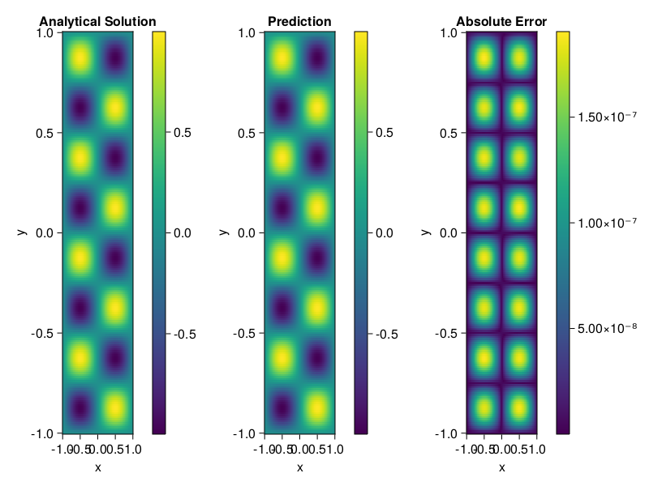

Helmholtz equation
Let us consider the Helmholtz equation in two space dimensions
\[\begin{aligned} &\Delta u(x, y)+k^{2} u(x, y)=q(x, y), \quad(x, y) \in \Omega:=(-1,1)^2 \\ &u(x, y)=0, \quad(x, y) \in \partial \Omega \end{aligned}\]
where
\[q(x, y)=-\left(a_{1} \pi\right)^{2} \sin \left(a_{1} \pi x\right) \sin \left(a_{2} \pi y\right)-\left(a_{2} \pi\right)^{2} \sin \left(a_{1} \pi x\right) \sin \left(a_{2} \pi y\right)+k^{2} \sin \left(a_{1} \pi x\right) \sin \left(a_{2} \pi y\right).\]
The excat solution is $u(x,y)=\sin{a_1\pi x}\sin{a_2\pi y}$. We chose $k=1, a_1 = 1$ and $a_2 = 4$.
using ModelingToolkit, IntervalSets, Sophon, Lux
using Optimization, OptimizationOptimJL
@parameters x,y
@variables u(..)
Dxx = Differential(x)^2
Dyy = Differential(y)^2
a1 = 1
a2 = 4
k = 1
q(x,y) = -(a1*π)^2 * sin(a1*π*x) * sin(a2*π*y) - (a2*π)^2 * sin(a1*π*x) * sin(a2*π*y) + k^2 * sin(a1*π*x) * sin(a2*π*y)
eq = Dxx(u(x,y)) + Dyy(u(x,y)) + k^2 * u(x,y) ~ q(x,y)
domains = [x ∈ Interval(-1,1), y ∈ Interval(-1,1)]
bcs = [u(-1,y) ~ 0, u(1,y) ~ 0, u(x, -1) ~ 0, u(x, 1) ~ 0]
@named helmholtz = PDESystem(eq, bcs, domains, [x,y], [u(x,y)])\[ \begin{align} \frac{\mathrm{d}}{\mathrm{d}y} \frac{\mathrm{d}}{\mathrm{d}y} u\left( x, y \right) + \frac{\mathrm{d}}{\mathrm{d}x} \frac{\mathrm{d}}{\mathrm{d}x} u\left( x, y \right) + u\left( x, y \right) =& - 166.78 \sin\left( 3.1416 x \right) \sin\left( 12.566 y \right) \end{align} \]
Note that the boundary conditions are compatible with periocity, which allows us to apply BACON.
chain = BACON(2, 1, 5, 2; hidden_dims = 32, num_layers=5)
pinn = PINN(chain) # call `gpu` on it if you want to use gpu
sampler = QuasiRandomSampler(300, 100)
strategy = NonAdaptiveTraining()
prob = Sophon.discretize(helmholtz, pinn, sampler, strategy)
@time res = Optimization.solve(prob, BFGS(); maxiters=1000)u: ComponentVector{Float64}(filters = (filter_1 = (bias = [0.728475318411606; -1.1442960797561443; … ; 0.4151841974320513; -0.398273749763787;;]), filter_2 = (bias = [-0.002855245084017172; 0.1890292784285359; … ; 0.9167902973077502; 0.8357482556469249;;]), filter_3 = (bias = [-0.42719019873846514; -0.07007952873366413; … ; 0.16005922085171964; 0.04922253518842561;;]), filter_4 = (bias = [0.588336626428746; 1.0083085708467572; … ; 0.11100915895412979; -0.562197087577234;;]), filter_5 = (bias = [-0.4982143498572079; -0.1818299523930955; … ; -0.11380762121555807; -0.8399810228059776;;])), linear_layers = (layer_1 = (weight = [-0.4214690007215341 0.029652586437248076 … -0.04680597308373239 0.22158474045033744; -0.33446455149218496 -0.28403097862773935 … 0.3401712430264765 0.22302818481840994; … ; 0.22063007885813143 0.3529710864009644 … -0.0450376085265489 0.08158460615196175; 0.3431938336656573 -0.407130757149766 … -0.4543971158570061 -0.3416976442566148], bias = [-0.010978092526111326; 0.03790493207333694; … ; -0.018706882917524936; -0.0033645814138288997;;]), layer_2 = (weight = [0.36740712578510754 -0.283136434613766 … -0.14698709249313774 -0.1989872866638948; 0.13809169482760705 -0.5513882111007548 … 0.0003458786108697251 0.2365255383534782; … ; -0.1725434861431161 -0.298694708902819 … -0.04529409594205267 -0.3479492493859507; -0.42965115447929864 -0.18906845655996932 … 0.19970695834605584 -0.1824705378610241], bias = [-0.013061055242667945; 0.041573768716232425; … ; -0.05299012679537812; -0.047028343501335376;;]), layer_3 = (weight = [-0.29436129051952653 0.5419156528092747 … -0.297827408689742 -0.34977857886564734; 0.22610281818822534 0.1383819877696945 … 0.14944222634086593 0.1754654212136071; … ; 0.3164769909896377 -0.4072194169937514 … 0.31518633863929213 0.06597552793867552; -0.19634700054371745 0.06611819004056824 … -0.35578417350647057 0.3396240795466902], bias = [0.007839677688364903; -0.02621745918941488; … ; -0.013748609091967639; 0.0027226029547617603;;]), layer_4 = (weight = [0.05463290378800867 0.17320294232802197 … -0.2143829993516958 0.3047917765117802; 0.028853677749034246 0.33324980807682497 … 0.11765810399966312 0.1495898295741122; … ; -0.3029458499204326 0.11564262477424665 … 0.023975675129052226 -0.012419473835548462; -0.6161775706965223 0.08987962039190606 … 0.18414683507840046 -0.16254328007877242], bias = [0.009795680392800845; 0.0005718210608856485; … ; -9.259094630464491e-5; 0.011317240848813066;;])), output_layer = (weight = [0.2767093240238282 -0.18591427084486586 … 0.06555487311771803 0.193058500788607], bias = [0.004381962283612255;;]))Let's plot the result.
phi = pinn.phi
xs, ys= [infimum(d.domain):0.01:supremum(d.domain) for d in domains]
u_analytic(x,y) = sinpi(a1*x)*sinpi(a2*y)
u_real = [u_analytic(x,y) for x in xs, y in ys]
phi_cpu = cpu(phi) # in case you are using GPU
ps_cpu = cpu(res.u)
u_pred = [sum(phi_cpu(([x,y]), ps_cpu)) for x in xs, y in ys]
using CairoMakie
axis = (xlabel="x", ylabel="y", title="Analytical Solution")
fig, ax1, hm1 = heatmap(xs, ys, u_real, axis=axis)
Colorbar(fig[:, end+1], hm1)
ax2, hm2= heatmap(fig[1, end+1], xs, ys, u_pred, axis= merge(axis, (;title = "Prediction")))
Colorbar(fig[:, end+1], hm2)
ax3, hm3 = heatmap(fig[1, end+1], xs, ys, abs.(u_pred-u_real), axis= merge(axis, (;title = "Absolute Error")))
Colorbar(fig[:, end+1], hm3)
fig